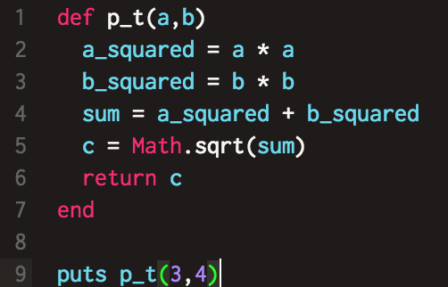
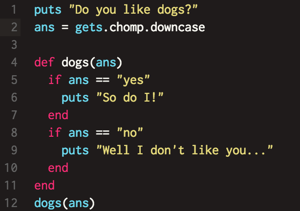
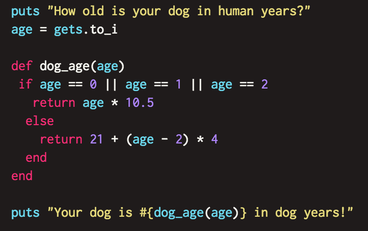
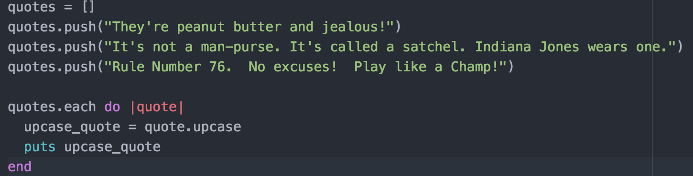

opens space in terminal for user to enter information.
.chomp
removes the space added to information input when pressing “enter”. Use as “get.chomp”.
.inspect
shows information about a variable to the developer.
.to_i
cuts off or “truncates” the decimal
on a float, turning it into an integer. i.e. var1 = 10.3 , var1.to_i will equal 10
.to_f
turns an integer into a float. i.e. 2 becomes 2.0
.to_s
turns a value into a string. i.e. 2 becomes “2”.
these can work in all different ways (string to integer) to get the desired type.
When you do a calculation using a float, all integers turn into floats. However, if you calculate with only integers, the answer will only be an integer. Any remainders will be truncated. You can get an exact number with floats by adding .to_f to any of the numbers in the calculation.
It’s important to keep track of when you are working with strings and when you are working with integers. Like if you have “10” * 10, you wouldn't get 100, you'd get 10101010101010101010.
Functions are written using “def name(parameter)” followed by the details of the function and closed by the word “end”.
The function can then be called by writing the name of the function and putting an argument in the parenthesis.
return
using return
returns the value after the word
stops the function
if you put puts instead of return, the value will be printed, but the variable that called the function
will be considered blank, and will appear blank if it is printed. If everything is voided, the method will implicitly
return the value, but I guess won't end the function.
Pathagorean Theorem Method

keywords
keywords have special meanings, so they can't be used to name variables. So far, I've used:
def
end
return
If Statements
If statements check to see if a condition is true. If it is, the following code will run.
You usually use the Comparison operator "==" to confirm that the two values are equal. It's important to remember that
the "=" operator is the assignmnet operator and assigns the value on the right to the value on the left.
It's important to remember to call a function at some point in order to initiate it.
Here's an example of an "if" statement and the function being called

! Bang
The ! operator reverses a value, making it the opposite of what it actually is i.e. ture becomes false
elsif
The elsif statement works like this: You start with an if statement. If the condition is false, the program will
go down to the next line, which is an elsif statement. It will continue to go down through the elsif statements until
it gets to an else statement that catches the rest of the conditions.
Operators
||
Double pipe characters is the "or" operator, which checks multiple conditions, and if any of them are true,
the following program will execute.
Here's an example of how the "or" operator works

&&
The && operator reads as "and" and requires both sides to be true in order for the condition to be true
An array is a list of items, and is contained by "[]". The array can be stored in a variable like:
quotes = []
To insert items into an array, select the variable and use the ".push()" method, like:
quotes.push("Stupid is as stupid does")
You can also add items using the "<<" operator like:
quotes << "Are you not entertained!?"
You can also just enter them directly into the array, seperated by a comma
You can see the number of items in an array using the .length method.
You can access a certain item in the arrat by using its index number, starting from 0, which is the first item,
and ending at n-1. So to get the 2nd quote, store quotes[1] in a variable
Iterations
To iterate through an array, use the ".each" method followed by "do |variable|". The each method
will loop through the list and store each item in the variable withing the pipe characters.
The code below the .each method will be executed on each individual item
that is in the declared variable ||.
The code in this variable only lives within this code block
and can't be referenced outside of it. This is known at the variables' "scope", which refers to the accessability
of the variable. This would be a "local" variable, where it only exists within this block. A "global" variable
exists outside of any code block and can be accessed at any time
The code block is closed with "end"
Here is an example of an array and a loop through it

Loops
You can us "while" loops to execute code everytime the condition following "while" evaluates as
being true. Usually you can set a global variable as a counter, then have the variable updated within the code block
by adding 1 (or any value) to it so that it will eventually make the condition above evaluate as being false.
You can have a loop run a set number of times by using the ".times" method followed by "do" and then the
code written below before "end"